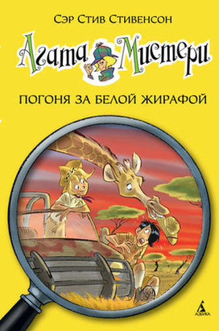

Агата Мистери Погоня за белой жирафой

Наделённая потрясающим чутьём и феноменальной памятью, Агата Мистери мечтает стать писательницей. Но это в будущем, а пока она просто превосходная сыщица! Вместе со своим незадачливым братом Ларри, студентом детективной школы, она путешествует по миру, чтобы решать самые запутанные загадки. А помогают им преданный дворецкий, вредный сибирский кот и множество чудаковатых родственников.
Погоня за белой жирафой
В самом сердце саванны пропала белая жирафа, редкий экземпляр, почитаемый племенем масаи как божество. Агата и Ларри Мистери в сопровождении дальней родственницы, которая занимается организацией сафари, отправляются в захватывающее путешествие по Африке, чтобы выйти на след браконьера, похитившего уникальное животное.